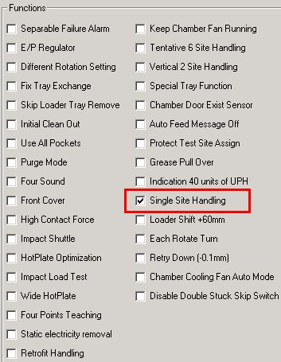
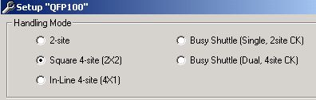
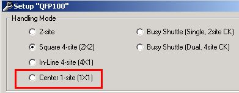

Service History
Subject: NS-7000 Single Site Handling
Handler Model: NS-7000
Controller: RC520
Date: 14 May 2008
Information
To enable single site handling in NS-7000.
Action
Double-click C:\NS7000\exe\Config.exe, check the function "Single Site Handling".
You need to enable it like Vertical 1x2 (Vertial 2 Site Handling) before you can select it under "SETUP" in MMI.
|
 |
 Before Enable Single Site Handling |
|
 After Enable Single Site handling |
Cause